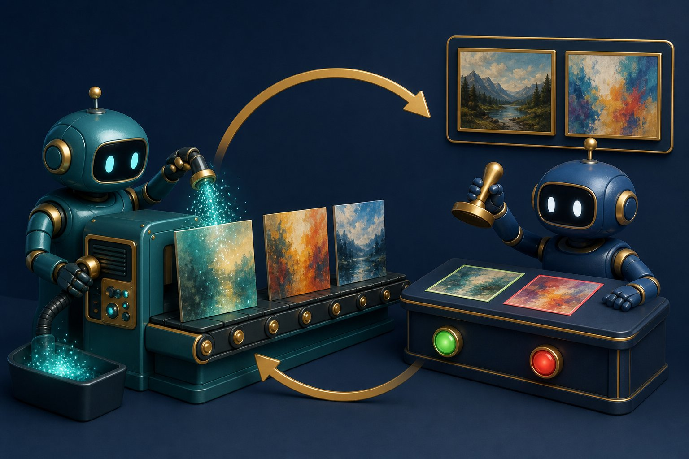

Generative AI
Generative models learn P(data) well enough to sample new images, audio, or text that look like the training distribution — and, with guidance, like your prompt.

Figure 14.1 — GAN: a generator forges samples; a discriminator tries to tell real from fake.
Families of generators
| Family | Idea | Typical use |
|---|---|---|
| VAE | Encode to a distribution, decode; maximise likelihood with a KL regulariser on the latent. | Disentangled latents, compression, anomaly detection. |
| GAN | Two-player game: generator vs discriminator. | Sharp images (historically); training can be unstable (mode collapse). |
| Autoregressive | Factor P(x) as a product of conditionals (pixels or tokens). | LLMs; some audio (WaveNet). |
| Diffusion / flow matching | Add noise then learn to denoise (or learn a velocity field). | State-of-the-art image/video generation. |
Diffusion, intuitively
Forward process: slowly scramble an image into noise. Reverse process: a neural net predicts the noise (or the clean image) at each step, walking back to a sample. Text conditioning (CLIP embeddings, cross-attention) steers the walk so “a red bicycle at dusk” emerges. Fewer steps with distilled samplers make this interactive.
Multimodal systems
Today’s products glue modalities: text→image, image→text (captioning), speech↔text, and unified models that accept mixed inputs. The same Transformer backbone keeps showing up; only the tokenizer/encoder of each modality changes.
Product reality
- Copyright and training-data provenance are live legal issues.
- Deepfakes need provenance (watermarks, C2PA) and media literacy, not only model cards.
- Eval is hard: FID/CLIP scores ≠ “this is what the user wanted.” Human preference still rules.
Short notes
Generative AI learns a distribution and samples from it. VAEs are probabilistic autoencoders; GANs play a game; diffusion denoises; LLMs are autoregressive token models. Conditioning (text prompts, class labels) turns a sampler into a controllable tool. Quality, safety, and IP are as central as architecture.
Point notes
- GAN: generator vs discriminator.
- VAE: latent + reconstruction + KL.
- Diffusion: noise → denoise, often text-conditioned.
- LLM = autoregressive generative model of text.
- Eval + provenance matter in production.
MCQs
4 questions1. Mode collapse in a GAN means:
2. A diffusion model generates images by:
3. Which is an autoregressive generative model?
4. CLIP-style text encoders are useful in image generation because they:
Practice questions
P1. Contrast a VAE and a GAN on (i) training stability, (ii) sample sharpness, (iii) a usable latent space.
(i) VAEs: relatively stable likelihood training. GANs: adversarial, finicky. (ii) Classic VAEs: blurrier; GANs: sharper when they work. (iii) VAEs: structured latent with KL; easy to interpolate. GAN latents are less semantically organised unless designed (StyleGAN W space). Diffusion now often wins fidelity; latent diffusion keeps a VAE-like compressor in front.
P2. A company wants “AI that makes product photos.” List three non-model risks you would raise before launch.
Training-data copyright/trademark (logos on generated bottles); misleading advertising (generated claims vs real product); brand consistency and safety (unsafe use depictions); deepfake policy if people are in ads; evaluation against real catalogue quality; human review for regulated markets (pharma, finance).